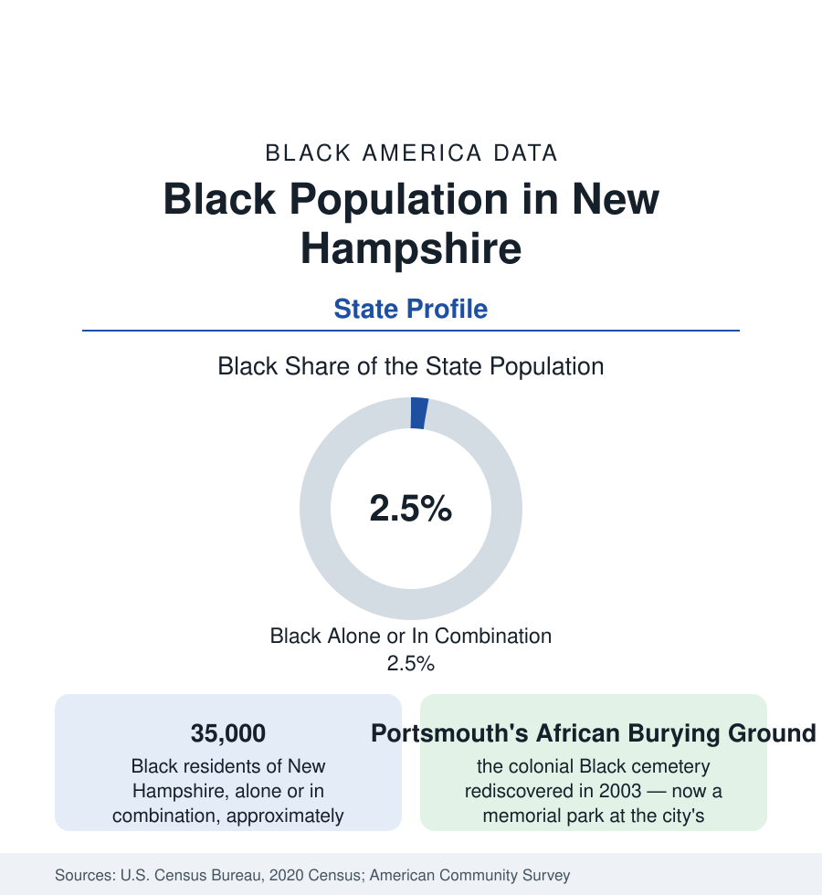

Black Census
Black Population in New Hampshire: Portsmouth's Burial Ground, Manchester's Newcomers
About 35,000 Black New Hampshire residents — one in forty — between a colonial port community and a resettled mill city. The census profile.

New Hampshire holds about 35,000 Black residents — Black alone or in combination — roughly one in forty of its people, with Black alone at about 21,000, or 1.5 percent. The population is a study in two eras: a colonial Black community in Portsmouth, the state's only seaport, whose burial ground lay forgotten under a downtown street for two centuries; and a modern community in Manchester, the old mill city, built substantially by refugee resettlement. Between them sits one of the smallest Black populations in the reference, spread thin across a largely rural state.
Portsmouth: The Burial Ground and the Trail
Portsmouth's colonial Black community served the port's merchants and ship captains — enslaved and free — and buried its dead in the African Burying Ground on Chestnut Street, in use through the eighteenth century and then paved over as the city grew, its existence recorded in maps and then forgotten until construction work rediscovered the burials in 2003. The city has since built the African Burying Ground Memorial Park on the site — the only memorial of its kind in New England — and the Portsmouth Black Heritage Trail documents the community's full record: the churches, the Pullman porters' neighborhood, the wartime shipyard workers. The modern Portsmouth Black population is small (a few percent of the city), but the heritage infrastructure is the state's Black institutional anchor, a pattern this reference meets in the other small-population seacoast and heritage towns.
Manchester: The Resettlement City
Manchester, the state's largest city, holds its largest Black population: roughly 8,000 to 9,000 residents, about a thirteenth of the city, concentrated on the West Side and the east-side neighborhoods around the old mill districts. The community's composition is the modern resettlement story: New Hampshire has been a refugee-receiving state for four decades, and Manchester's arrivals — Somali, Sudanese, Congolese, Burundian, Bosnian (in the European counts), and Bhutanese (in the Asian counts) — made it one of the most diverse small cities in New England, its school district reporting dozens of home languages and Black student shares approaching a tenth. The Queen City's Black institutions — its churches, African community associations, and the state NAACP's Manchester chapter — are built substantially on this newcomer base, layered over the smaller native-born community of the mill and railroad generations.
The Southern Tier and the Rest
The state's remaining Black population distributes along the Massachusetts border's suburban corridor — Nashua (roughly 4 to 5 percent Black), Salem, and the I-93 towns, whose communities are Boston-metro spillover in the census's functional terms — and around the institutions: the University of New Hampshire at Durham, Dartmouth at Hanover, the naval shipyard at Portsmouth (whose workforce lives on both sides of the Maine line), and Pease's air base legacy. The North Country and the lakes and mountain regions record Black shares under 1 percent, in the pattern of northern New England generally. The state's Black elected and institutional presence is correspondingly metro-concentrated: the Manchester and seacoast delegations carry it in the legislature's data.
Indicators and Change
The small-population caution applies as in Vermont's file: survey levels for 35,000 people swing with samples, and this reference reads the trends. They show a growing population — among New England's faster percentage growth from a small base — with the Manchester resettlement communities and the southern suburbs driving the increase; incomes and attainment in the survey data run near the state's high overall figures for the suburban population and lower in the newcomer communities, composing an average that describes neither. Homeownership follows the same split. The state has no HBCU; the seacoast heritage institutions and Manchester's associations carry the civic layer.
Reading the New Hampshire Numbers
The cultural record adds one more thread: Langston Hughes spent formative summers in New Hampshire's orbit, and the state's Black literary and arts presence — carried in the modern era by the seacoast's heritage organizations and Manchester's festival culture — is documented in the heritage trail's extensions. The state's Black population also includes a small, old seacoast layer in Dover and Exeter whose church records run to the early republic.
New Hampshire's 35,000 Black residents hold two of the reference's most instructive small facts: a burial ground that slept under a street for two hundred years and now anchors a city's conscience, and a mill city remade by the world's displaced within one generation. Small states, in this data as in others, are not minor subjects — they are concentrated ones.
More in Black Census
The Black Population of the United States: Size, Definitions, and Distribution
The Black population of the United States totals 52.8 million — 15.4 percent of the nation. How the Census Bureau defines and counts the population, and where it lives.
Black Median Household Income in the United States
Black median household income stands at $56,490 in the Census Bureau's annual income report — how the figure is measured, how it compares, and what drives it.
The Black Poverty Rate: Levels, Children, and the Long Trend
The official Black poverty rate is 17.1 percent — against 11.1 percent nationally and 7.7 percent for non-Hispanic White Americans. How poverty is measured and what the data show.
Source: U.S. Census Bureau, 2020 Census; American Community Survey; Population Estimates Program.